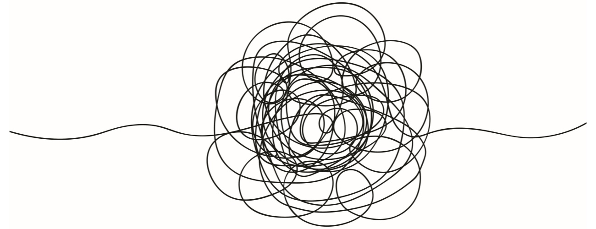

Separation Anxiety
[This was first written on 2024/03/24.]
I never realized that I used to have separation anxiety until last year (2023). Don’t remember how old I was at that time, but we’d definitely moved to our new house. So, 5th or 6th grade.The background is quite complicated. Long story short: my mother was cheating. Btw, I always feel strange and funny to type or say the word “cheating” idky. Is it because cheating can be a shame? Or is it because I helped her lie to everyone and said that I didn’t know anything to the point even myself believed it, simply because I just hate my father too much? Or both, I guess.
Of course, I always knew she was cheating, though I don’t remember how I found out. I saw the “uncomfortable” messages on her phone. I heard her talking to the man on the phone, sometimes arguing. I witnessed how she made millions of lies as such a bad liar. She lied about her age. She lied about being divorced. She lied about living with my uncle, not her husband. She was even bold enough to take me to visit that man, spend a night in his house, chat with his father, and travel for a week together with him. If he is reading… sry I got my period on your sheet, but not really sry.
But then, I also witnessed how all the lies she knitted were nailed one by one. Didn’t know how exactly, but I heard her arguing with him on the phone in the bathroom. Perhaps she begged him not to break up with her. she was always crying at that time. Wow, no way, she really loved him.
Why could I secretly collect so much information? Well, everyday after school, I would go to her shop and wait for her to go home together. So during the period when she was busy begging the man not to break up with her, she kept telling me not to wait for her anymore, cuz she’s not coming home anymore. You wonder how I got my separation anxiety? Honestly, I only realized this could be the reason now when I write it down.
Then, my father found out. That day, I went back home and saw everyone gathering in the house. The minute I got back, they forced me to say whether my mother was cheating or not. Here it came. I hate this man in the house so much. My father. So, I said I didn’t know. But since then, I wasn’t allowed to wait for my mother to go home together anymore. I went back home straight after school. There started my separation anxiety.
She was always late to come home. Didn’t often make it for dinner and was always home after nine. Kids were required to go to bed at about 8:30. So she couldn’t even come back before I went to bed. Good thing is I couldn’t sleep anyway. Busying feeling anxiety.
Outside the window in my room was her way home. Every night when I went to my room, I stood there, waiting to see her. I was so anxious. I wanted to puke, my stomach hurt, I couldn’t breathe, and I surely couldn’t sleep. Obviously, now I know it’s called Irritable Bowel Syndrome (IBS). And remember how Ennis from Brokeback Mountain started vomiting after he and jack parted away? I always thought everyone would feel like puking or pooping when they feel nervous or anxious, just like I do. Turns out I just had separation anxiety since a young age so I assumed it’s natural.
Seeing her walk pass my window was not enough. She would sit there on a bench, talking to her lover through the phone for 30 minutes. Of course they got back together. She even keeps that man’s WeChat account till this day. Then she came home and I recovered from my anxiety and felt asleep. It continued for probably 2 years. It was undoubtedly long enough to damage my mental health and make me want to avoid intimate relationship with her when I grew up. Because my brain remembers how painful it was to separate with her, so my brain decides to not being close with her at all. And she asks why wouldn’t I share anything with her.
Mom, you made this part of me.